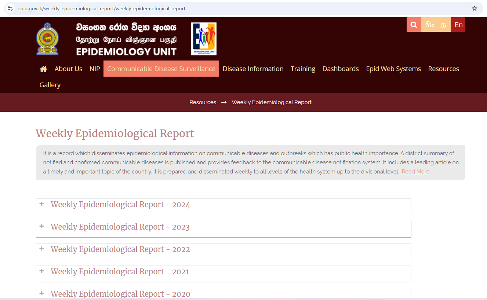
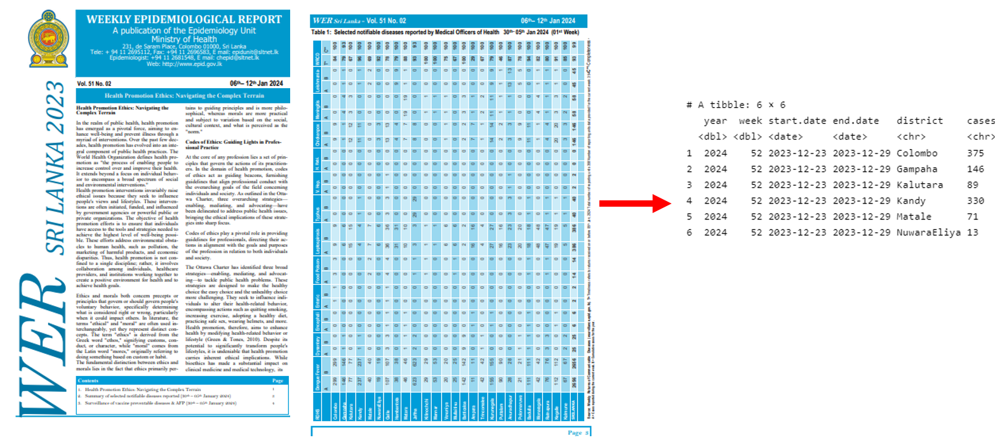
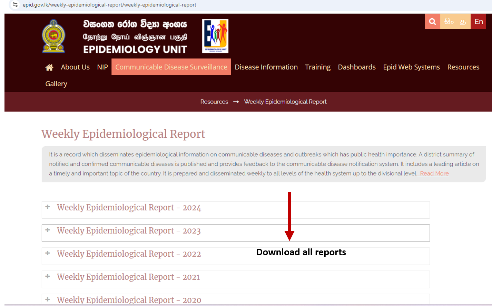

library(denguedatahub)
library(tsibble)Web Scraping Functions
Function to extract dengue cases from weekly epidemiological reports published by Epidemiology Unit, Ministry of Health Sri Lanka
Step 1: Get PDF links corresponds to 2024

library(denguedatahub)
link2024 <- get_pdflinks_srilanka(url="https://www.epid.gov.lk/weekly-epidemiological-report/weekly-epidemiological-report", volume.number="Vol_51")
head(link2024)[1] "https://www.epid.gov.lk/storage/post/pdfs/en_65b8d3689b762_Vol_51_no_01-english.pdf"
[2] "https://www.epid.gov.lk/storage/post/pdfs/en_65fc755050a91_Vol_51_no_02-english.pdf"
[3] "https://www.epid.gov.lk/storage/post/pdfs/en_65fc71dbe22ce_Vol_51_no_03-english.pdf"
[4] "https://www.epid.gov.lk/storage/post/pdfs/en_65fc6756ec7d6_Vol_51_no_04-english.pdf"
[5] "https://www.epid.gov.lk/storage/post/pdfs/en_65fc628912f33_Vol_51_no_05-english.pdf"
[6] "https://www.epid.gov.lk/storage/post/pdfs/en_65fc60581a048_Vol_51_no_06-english.pdf"Step 2: Convert PDF file data into tibble format

This example illustrates the content of the first 2 pages of the PDF.
link2024[[1]][1] ## No 1 WER[1] "https://www.epid.gov.lk/storage/post/pdfs/en_65b8d3689b762_Vol_51_no_01-english.pdf"link2024[[2]][1] ## No 30 WER[1] "https://www.epid.gov.lk/storage/post/pdfs/en_65fc755050a91_Vol_51_no_02-english.pdf"data2024 <- convert_slwer_to_tidy(year=2024,
reports.url=link2024[1:2],
start.date.first = "2023-12-23",
end.date.first = "2023-12-29",
start.date.last = "2023-12-30",
end.date.last = "2024-1-05",
week.no=c(52, 1))New names:
New names:
• `` -> `...2`
• `` -> `...7`
• `` -> `...10`
• `` -> `...12`head(data2024)# A tibble: 6 × 6
year week start.date end.date district cases
<dbl> <dbl> <date> <date> <chr> <chr>
1 2024 52 2023-12-23 2023-12-29 Colombo 375
2 2024 52 2023-12-23 2023-12-29 Gampaha 146
3 2024 52 2023-12-23 2023-12-29 Kalutara 89
4 2024 52 2023-12-23 2023-12-29 Kandy 330
5 2024 52 2023-12-23 2023-12-29 Matale 71
6 2024 52 2023-12-23 2023-12-29 NuwaraEliya 13 Function to download Weekly Epidemiological Reports (WEK) and save them inside the local directory

download_pdfwer_srilanka(url="https://www.epid.gov.lk/weekly-epidemiological-report/weekly-epidemiological-report", folder.name="dengue", volume.number="Vol_51")